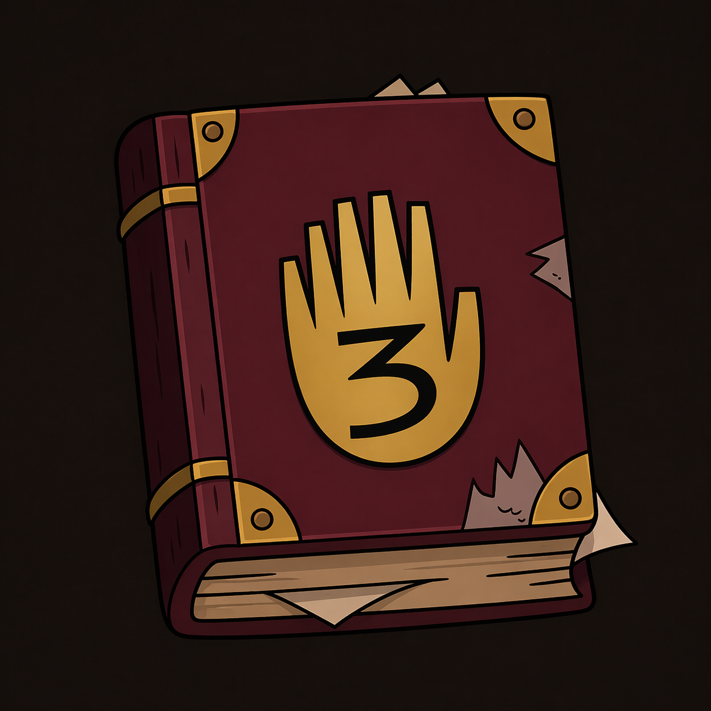

Arquivo nº 03
Diário de Investigação #3
Um dos artefatos mais emblemáticos da Mystery Shack, repleto de observações, criaturas catalogadas, mapas parciais e anotações que sugerem muito mais do que revelam.
A capa envelhecida, o aspecto de item recuperado de expedições e a diagramação interna cheia de símbolos fazem deste diário uma peça central para qualquer coleção temática.
R$ 199,99
Raro
- Capa dura com aparência vintage e acabamento envelhecido.
- Ilustrações, símbolos e notas inspiradas em investigações sobrenaturais.
- Ideal para decoração, coleção ou composição de cenários temáticos.